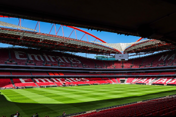

Morocco

Casablanca: A new stadium, the Grand Stade Hassan II, with a capacity of 115,000 seats, is under construction in Benslimane near Casablanca, set to open in 2028.
Rabat: The Prince Moulay Abdellah Stadium (69,500 capacity) will host matches and may also host the 2025 Africa Cup of Nations final.
Tangier: The renovated Ibn Batouta Stadium is among the selected venues.
Marrakech: The Marrakech Stadium will host World Cup games.
Agadir: The Stade Adrar is included in the list of venues.
Fès: The Fès Stadium is also part of the selected sites.
Portugal
Lisbon: The Estádio da Luz is selected for World Cup games.
Porto: The Estádio do Dragão is included as one of the host stadiums.

Spain
Madrid: The Santiago Bernabéu Stadium is proposed for key matches, including the opening or final.
Barcelona: Camp Nou is planned for high-profile games.
Bilbao: San Mamés Stadium is among the host venues.
Seville: La Cartuja Stadium will host matches.
Valencia: The Nou Mestalla, a 70,000-seat stadium under construction, is expected to be completed by 2027 and will host matches.
Málaga: La Rosaleda Stadium is being renovated to meet FIFA standards.
La Coruña: Riazor Stadium is included in the host list.
San Sebastián: Anoeta Stadium will host games.
Zaragoza: La Romareda Stadium is also set to host matches.